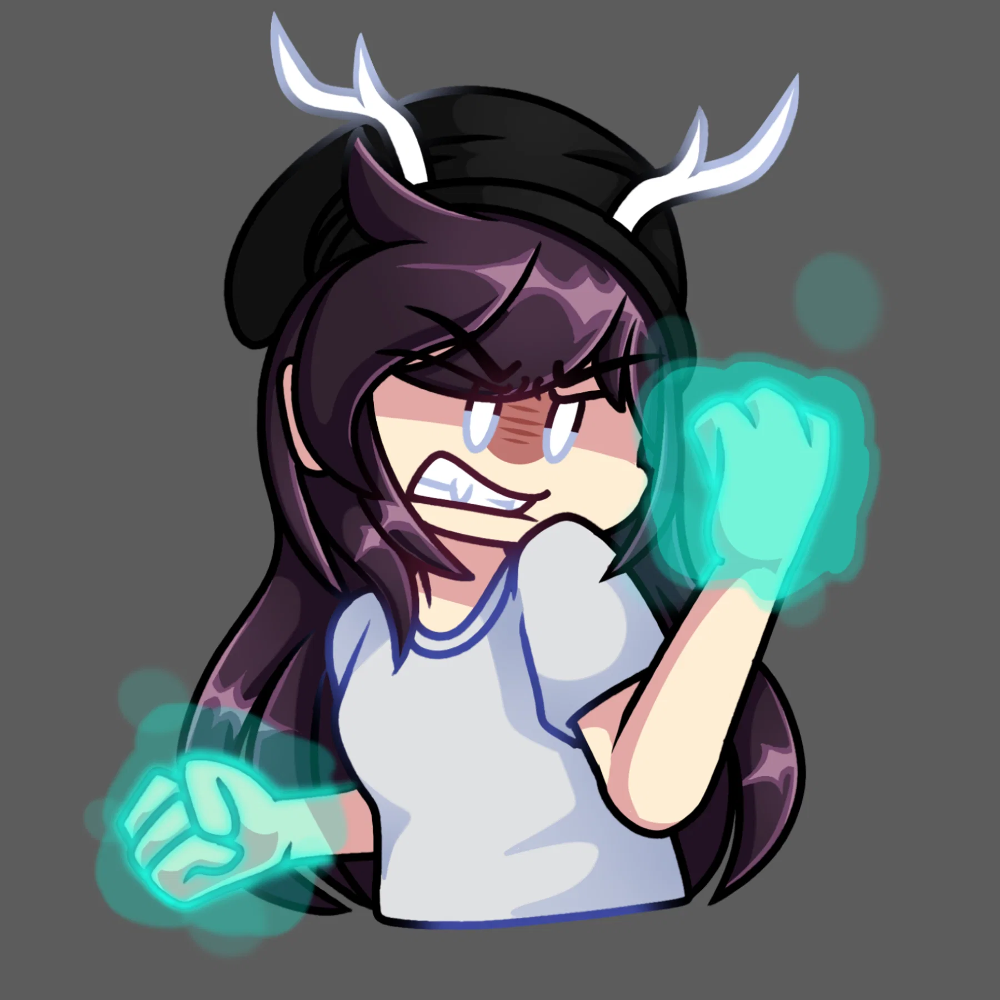
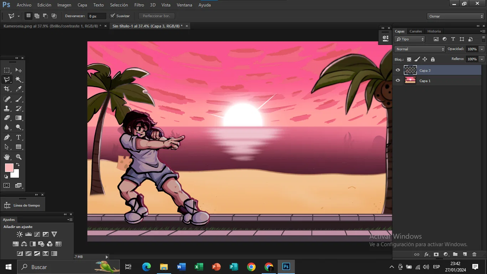
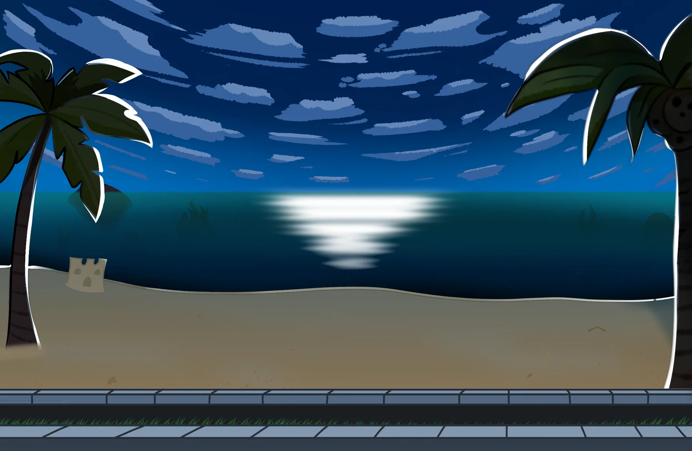

ARCHIVO REPRODUCIBLE
Adversary
Versión vocal · 2:58 · crédito musical no indicado.
Una semana construida como tres horas del mismo litoral: playa brillante, atardecer fosforescente y noche fría.
Kamer canta contra Zafiro en una escena luminosa y costera.
Versión vocal · 2:58 · crédito musical no indicado.
Instrumental conservado · 2:58.


Jeyzel llega. Kamer toma más poder de la rosa para enfrentarse a Jeyzel y Zafiro. La canción nunca fue terminada.
Fragmento conservado · 0:55 · crédito pendiente.

No existe una canción entregada para esta etapa. Solo se conserva la idea visual de una costa nocturna como cierre de la semana.